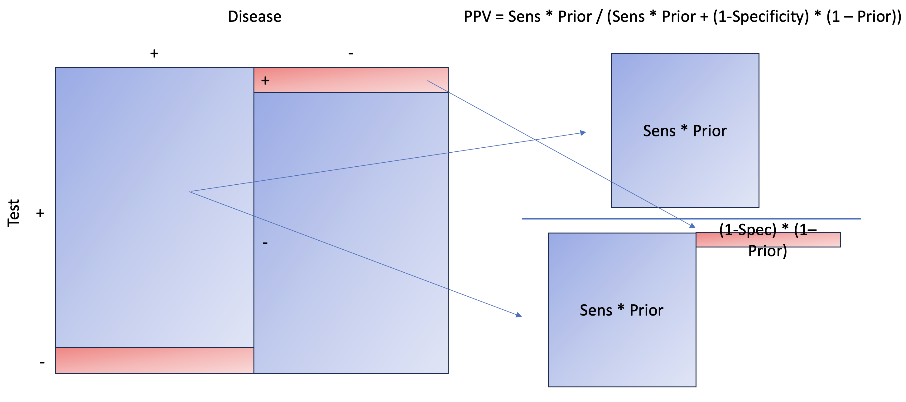

Previously, we familiarized ourselves to simple linear and logistic regression models using cmdstanr. Today, we’re going to explore a bit more practicality of bayes’ theorem in clinical setting.
Disclaimer:
This is not medical advice, nor is it a definitive method for application. This tool, like any other, is utilized to understand the prior, likelihood, and posterior. Everything conducted here is simulated, utilizing assumed sensitivity and specificity values, which can be derived from medical literature.
Prior Is Not As Easy As We Think
Quantifying clinical intuition or judgment is no easy task. Our minds typically gravitate towards binary outcomes: it either is, or it is not. Unfortunately, Bayes’ Theorem does not operate in this manner. It necessitates a distribution and the probability of a condition. When we suspect or NOT suspect a clinical condition, we should strive to estimate it with a range and distribution, for example, a condition is about 50% with an sd of ~20%. This will give a range of possible values
A Quick Recap of Bayes’ Theorem
\[\begin{equation}
p(\text{disease+}|\text{test+}) = \frac{p(\text{test+}|\text{disease+}) \cdot p(\text{disease+})}{p(\text{test+})}
\end{equation}\]
The equation above is positive predictive value, meaning what is the probability of having a condition given a test positive. p(disease+) is essentially our prior, our clinical gestalt (perhaps from history, physical exam, certain data).
Today, we’ll attempt to explore this clinical applicability and open our eyes to probability theory.
Load Library & Simulate Sensitivity / Specificity Data
Let’s assume that we have a set of data set that we can estimate the sensitivity and specificity of a test. Let’s hypothetically call this test prokalcitony 🤣. Given a hypothetical medical literature, the estimated sensitivity is 98% (95%CI 95-100) and specificity of 90% (95%CI 85-92) if threshold is set at < 0.05.
library(tidyverse)
library(cmdstanr)
library(bayesplot)
# assuming prokalcitony has sens of 98% (95%CI 95-100) and spec of 90% (95%CI 85-92)
sens_spec_calc <- function(point,ci,num) {
point_ci_diff <- abs(point-ci)
std <- point_ci_diff/1.96
mu <- point
var <- std^2
alpha <- ((1 - mu) / var - 1 / mu) * mu ^ 2
beta <- alpha * (1 / mu - 1)
return_vector <- rbeta(num,alpha,beta)
return(return_vector)
}
#simulated data, assuming we have data to run thru stan and mcmc
n <- 1000
set.seed(1)
pos_disease <- rbinom(n/2,1,sens_spec_calc(point=0.98,ci=0.95, num=n))
neg_disease <- rbinom(n/2,1,sens_spec_calc(point=0.9,ci = 0.85,num=n))
neg_disease <- ifelse(neg_disease==1,0,1)
df <- list(N=n, disease=c(rep(1,n/2),rep(0,n/2)), test=c(pos_disease,neg_disease))
Let’s explore the code above. The function of sens_spec_calc essentially creates a beta-binomial distribution just so we’re not tied to one point estimate, but rather a distribution. Hypothetically, let’s say we do have this dataset (simulated), we can then estimate the sensitivity and specificity. Then use it to assess how our prior changes given a test result.
Stan Model For Estimating Sens/Spec
#stan model for estimating sens and spec of simulated data
diagnostic_stan <- '
data {
int N;
array[N] int test;
array[N] int disease;
}
parameters {
real<lower=0,upper=1> sensitivity;
real<lower=0,upper=1> specificity;
}
model {
//prior
sensitivity ~ uniform(0,100);
specificity ~ uniform(0,100);
// Likelihood
for (i in 1:N) {
if (disease[i] == 1) {
test[i] ~ bernoulli(sensitivity);
} else {
test[i] ~ bernoulli(1-specificity);
}
}
}
'
# running it without stan file
mod <- cmdstan_model(write_stan_file(diagnostic_stan))
fit <- mod$sample(data=df, seed = 123, chains = 4, parallel_chains = 4, iter_warmup = 1000, iter_sampling = 2000, show_messages = F)
#fit$summary()
#mcmc_trace(fit$draws())
Nice! The sen and spec estimates and its 95% CI are very similar to how we set them. Let’s extract the sens and spec chains and use them to our advantage to estimate our ppv / npv.
# extracting all sens of all 4 chains (excluding warm up)
sens <- fit$draws(variables = "sensitivity") |>
as.data.frame() |>
unlist()
hist(sens, xlim=c(0,1))
# extracting all spec of all 4 chains (excluding warm up)
spec <- fit$draws(variables = "specificity") |>
as.data.frame() |>
unlist()
hist(spec, xlim=c(0,1))

Clinical Prior Using Beta-Binomial Distribution
# write a function to set our clinical prior using beta-binomial
prior_beta <- function(mu,std) {
var <- std^2
alpha <- ((1 - mu) / var - 1 / mu) * mu ^ 2
beta <- alpha * (1 / mu - 1)
return(list(alpha=alpha,beta=beta))
}
# assuming we have 30% suspicion that the person has disease with an sd of 10%
pb <- prior_beta(0.3,0.1)
prior <- rbeta(length(sens),shape1 = pb$alpha, shape2 = pb$beta)
hist(prior, xlim=c(0,1))
Quantifying our prior, as previously discussed, poses a significant challenge. The difficulty arises in translating a binary thought process into a distribution. Within epidemiology, we encounter metrics like incidence and prevalence, which are essentially point estimates, thereby facilitating the assignment of a number to our prior more straightforwardly. Cultivating the skill to quantify uncertainty necessitates practice and a comfort with embracing ranges and unpredictability. Several distributions are available to assist in this, such as the familiar binomial distribution, and others that offer more flexibility like the beta-binomial distribution. The latter provides alpha and beta parameters which assist in shaping the desired distribution, as demonstrated in the previous example. To simplify matters, we can devise a function that utilizes mean and sd to convert alpha and beta for us.
In the above example, we simulated a beta-binomial distribution with a mean of 30% and a standard deviation of 10%. You can essentially experiment with these values to practice shaping the ranges of your clinical gestalt or prior. Observe that the range is bounded between 0 and 1. Additionally, the distribution appears to be wider than the sensitivity and specificity in previous plots. We are essentially asserting that we suspect there is a mean 30% probability of the patient having the disease, with a standard deviation of 10%, ranging from 0 to 60%. This also indicates that, while we are not entirely certain, we harbor less suspicion that the patient has the disease. The threshold is arbitrary, but we’ll set >55% as a benchmark
Write Our PPV/NPV formula in Stan
#diag pred model
diag_pred <- "
data {
int N;
array[N] real sens;
array[N] real spec;
array[N] real prior;
}
generated quantities {
array[N] real ppv;
array[N] real npv;
for (i in 1:N) {
ppv[i] = sens[i]*prior[i] / ((sens[i]*prior[i])+((1-prior[i])*(1-spec[i])));
npv[i] = ((1-prior[i])*spec[i]) / (((1-prior[i])*spec[i])+(prior[i]*(1-sens[i])));
}
}
"
mod2 <- cmdstan_model(write_stan_file(diag_pred))
# set our clinical prior
df_prior <- list(N=length(sens),sens=sens,spec=spec,prior=prior)
# fit fixed_param
fit2 <- mod2$sample(data = df_prior, chains = 1, iter_sampling = 1, fixed_param = T, show_messages=F)
# extract all ppv and npv
df_param <- as.data.frame(fit2$summary())
Let’s break down what the code means. To calculate the positive predictive value (aka p(disease+|test+)) (refer to the formula at the beginning of the blog), we need to examine p(test+|disease+), also known as sensitivity, multiplied by the prior, and then divide by p(test+), or the total positive test results. This latter is calculated as [sensitivity * prior + (1-specificity) * (1-prior)].

We essentially aim to calculate the areas to the right, marginalizing on the positive test, which can also be interpreted as the probability of a disease given a positive test. To calculate the area, you need to multiply the length and width. Here, our length is sensitivity and 1 − specificity, while our width is prior and 1 − prior.
Let’s take a look at Negative Predictive Value, aka probability of NOT having disease given test negative.
As you can see, the concept is the same as PPV, except we are now interested in the NOT disease state when the test is negative. Later, at the end of the article, you’ll see that it makes more sense to estimate the probability of disease given a negative result. This is not only more intuitive but also more relatable than NPV itself.
Let’s take a look at our first 10 summary of generated quantities.
## variable mean median sd mad q5 q95 rhat ess_bulk ess_tail
## 1 ppv[1] 0.761350 0.761350 NA 0 0.761350 0.761350 NA NA NA
## 2 ppv[2] 0.717160 0.717160 NA 0 0.717160 0.717160 NA NA NA
## 3 ppv[3] 0.810141 0.810141 NA 0 0.810141 0.810141 NA NA NA
## 4 ppv[4] 0.631920 0.631920 NA 0 0.631920 0.631920 NA NA NA
## 5 ppv[5] 0.791641 0.791641 NA 0 0.791641 0.791641 NA NA NA
## 6 ppv[6] 0.792706 0.792706 NA 0 0.792706 0.792706 NA NA NA
## 7 ppv[7] 0.868056 0.868056 NA 0 0.868056 0.868056 NA NA NA
## 8 ppv[8] 0.745761 0.745761 NA 0 0.745761 0.745761 NA NA NA
## 9 ppv[9] 0.742902 0.742902 NA 0 0.742902 0.742902 NA NA NA
## 10 ppv[10] 0.798960 0.798960 NA 0 0.798960 0.798960 NA NA NA
Notice how our mean, median, 5%, and 95% all have the same value? That is because every row (e.g., PPV[1], PPV[2]) is an exact calculation of PPV using the distribution of sensitivity (sens), specificity (spec), and prior. Since each row will have different sens, spec, and prior values, given their distribution, we will have a different PPV. Essentially, we have over 8000 PPVs, from which we can construct a distribution. The same applies to NPV.
Visualize Our PPV with Prior
#visualize ppv
visualize(ppv, "PPV", "Positive")
Notice how the red distribution shifts to blue when the test is positive? We had a median prior of 30%, which shifts to 78% when the test is positive. This is quite an increase. However, also observe that the 95% credible interval ranges from 54-90%, meaning we’re not entirely certain if a person has the disease, even given a positive test.
Acknowledgement:
Lessons Learnt:
- We do not need separate Stan file to use cmdstan, can pass through with
write_stan_file
If you like this article:
- please feel free to send me a comment or visit my other blogs
- please feel free to follow me on twitter, GitHub or Mastodon
- if you would like collaborate please feel free to contact me